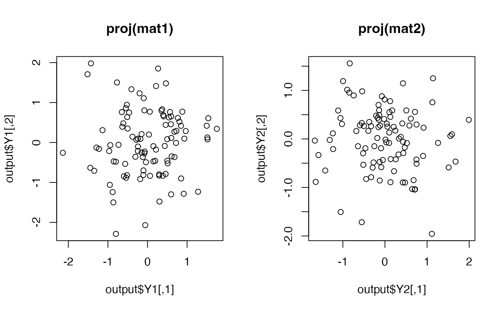

Given two data sets, Partial Least Squares (PLS) aims at maximizing cross-covariance of latent variables for each data matrix,
therefore it can be considered as supervised methods. As we have two input matrices, do.pls generates two sets of
outputs. Though it is widely used for regression problem, we used it in dimension reduction setting. For
algorithm aspects, we used recursive gram-schmidt orthogonalization in conjunction with extracting projection vectors under
eigen-decomposition formulation, as the problem dimension matters only up to original dimensionality.
For more details, see Wikipedia entry on PLS.
do.pls(data1, data2, ndim = 2)
| data1 | an \((n\times N)\) data matrix whose rows are observations |
|---|---|
| data2 | an \((n\times M)\) data matrix whose rows are observations |
| ndim | an integer-valued target dimension. |
a named list containing
an \((n\times ndim)\) matrix of projected observations from data1.
an \((n\times ndim)\) matrix of projected observations from data2.
an \((N\times ndim)\) whose columns are loadings for data1.
an \((M\times ndim)\) whose columns are loadings for data2.
a list containing information for out-of-sample prediction for data1.
a list containing information for out-of-sample prediction for data2.
a vector of eigenvalues for iterative decomposition.
Wold H (1975). “Path Models with Latent Variables: The NIPALS Approach.” In Quantitative Sociology, 307--357. Elsevier. ISBN 978-0-12-103950-9, doi: 10.1016/B978-0-12-103950-9.50017-4 .
Rosipal R, Krämer N (2006). “Overview and Recent Advances in Partial Least Squares.” In Saunders C, Grobelnik M, Gunn S, Shawe-Taylor J (eds.), Subspace, Latent Structure and Feature Selection: Statistical and Optimization Perspectives Workshop, SLSFS 2005, Bohinj, Slovenia, February 23-25, 2005, Revised Selected Papers, 34--51. Springer Berlin Heidelberg, Berlin, Heidelberg. ISBN 978-3-540-34138-3, doi: 10.1007/11752790_2 .
## generate 2 normal data matrices mat1 = matrix(rnorm(100*12),nrow=100)+10 # 12-dim normal mat2 = matrix(rnorm(100*6), nrow=100)-10 # 6-dim normal ## project onto 2 dimensional space for each data output = do.pls(mat1, mat2, ndim=2) ## visualize opar <- par(no.readonly=TRUE) par(mfrow=c(1,2)) plot(output$Y1, main="proj(mat1)") plot(output$Y2, main="proj(mat2)")par(opar)